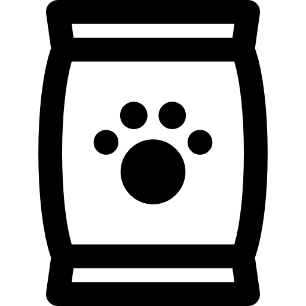

We All Love Article
FOO D
Pet food is animal feed intended for consumption by pets. Typically sold in pet stores and supermarkets, it is usually specific to the type of animal, such as dog food or cat food. Most meat used for animals is a byproduct of the human food industry, and is not regarded as "human grade".
... Read More

THIN GS
A pet shop or pet store is a retail business which sells animals and pet care resources to the public. A variety of animal supplies and pet accessories are also sold in pet shops. The products sold include: food, treats, toys, collars, leashes, cat litter, cages and aquariums.
... Read More
MEDIC AL
Veterinary medicine is the branch of medicine that deals with the prevention, management, diagnosis, and treatment of disease, disorder, and injury in animals. Along with this, it deals with animal rearing, husbandry, breeding, research on nutrition, and product development.
... Read More
This link Go's to other Food site. Do you like to go!.
Food
This link Go's to other Things site. Do you like to go!.
Things
This link Go's to other Medical site. Do you like to go!.
Medical
Pet owners trust us to look after the needs of their beloved companions.